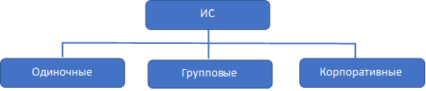

Лекция №1. Основные понятия. Жизненный цикл информационных систем
Согласно Федеральному закону «Об информации, информационных технологиях и о защите информации»:
- информация – сведения (сообщения, данные) независимо от формы их представления;
В литературе, посвященной компьютерной технике и программным средствам, часто употребляется термин «данные». Как правило, эти понятия взаимозаменяемы.
Данные – это информация, представленная в виде, пригодном для обработки автоматическими средствами.
Информационные технологии – процессы и методы поиска, сбора, хранения, обработки, предоставления, распространения информации, а также способы осуществления таких процессов и методов.
Информатизация общества немыслима без использования информационных систем и информационно-телекоммуникационных сетей.
Информационная система (ИС) – совокупность содержащейся в базах данных информации и обеспечивающих ее обработку информационных технологий и технических средств.
Другое определение:
Под информационной системой обычно понимается прикладная программная подсистема, ориентированная на сбор, хранение, поиск и обработку текстовой и/или фактографической информации.
Подавляющее большинство информационных систем работает в режиме диалога с пользователем.
Это определение упрощенно можно представить следующей формулой:
Программное обеспечение, входящее в состав информационных систем, реализуют:
- диалоговый ввод-вывод;
- логику диалога;
- прикладную логику обработки данных;
- логику управления данными;
- операции манипулирования файлами и (или) базами данных;
Определение автоматизированной системы:
Автоматизированная система – система, состоящая из персонала и комплекса средств автоматизации его деятельности, реализующая информационную технологию выполнения установленных функций.
Т.е. под «автоматизированной системой» понимается именно «информационная система».
ГОСТ 34.003-90 «Автоматизированные системы. Термины и определения»
Следует отметить, что автоматизированные системы могут быть не связаны с обработкой информации (например, гидроэлектростанция).
Если смотреть на второе определение, то:
в состав «автоматизированной информационной системы» входят персонал и средства.
К средствам относятся:
Информационно-телекоммуникационная сеть – технологическая система, предназначенная для передачи по линиям связи информации, доступ к которой осуществляется с использованием средств вычислительной техники.
Классификация ИС
Информационные системы классифицируются по разным признакам. Рассмотрим наиболее часто используемые способы классификации по масштабу, по сфере применения, способу организации.
- По масштабу

1. Одиночные информационные системы реализуются на автономном персональном компьютере (сеть не используется).
Может содержать несколько простых приложений, связанных общим информационным фондом;
Рассчитана на работу одного пользователя или группы пользователей, разделяющих во времени одно рабочее место.
Подобные приложения создаются с помощью так называемых настольных, или локальных систем управления базами данных (СУБД). Среди локальных СУБД наиболее известными являются Clarion, Clipper, d Base, Microsoft Access и др.
2. Групповые информационные системы
Ориентированы на коллективное использование информации членами рабочей группы;
Чаще всего строятся на базе локальной компьютерной сети;
При разработке таких приложений используются серверы баз данных (называемые также SQL - серверами) для рабочих групп.
Существует довольно большое количество различных SQL – серверов как коммерческих, так и свободно распространяемых. Среди них наиболее известны такие серверы баз данных, как Oracle, Microsoft SQL Server, Inter Base, Sybase и др.
3. Корпоративные информационные системы
Являются развитием систем рабочих групп;
Ориентированы на крупные компании и могут поддерживать территориально разнесенные узлы или сети;
В основном имеют иерархическую структуру из нескольких уровней. Для таких систем характерна архитектура клиент-сервер со специализацией серверов или же многоуровневая архитектура. При разработке таких систем могут использоваться те же серверы баз данных, что и при разработке групповых информационных систем. В крупных информационных системах наибольшее распространение получили серверы Oracle, DB2 и Microsoft Server.
- Классификация по сфере применения:
- системы обработки транзакций;
характерен регулярный (возможно интенсивный) поток довольно простых транзакций, играющих роль заказов, платежей, запросов и т.п. Важными требованиями для них являются:
- высокая производительность обработки транзакций;
- гарантированная доставка информации при удаленном доступе к БД по телекоммуникациям;
- системы поддержки принятия решений; (Decision Support System, DSS);
Системы поддержки принятия решений представляют собой другой тип информационных систем, в которых с помощью довольно сложных запросов производится отбор и анализ данных в различных разрезах: временных, географических, по другим показателям.
- информационно-справочные системы;
Обширный класс информационно-справочных систем основан на гипертекстовых документах и мультимедиа. Наибольшее развитие такие информационные системы получили в Интернете.
- офисные информационные системы;
Класс офисных информационных систем нацелен на перевод бумажных документов в электронный вид, автоматизацию делопроизводства и управление документооборотом.
- Классификация по сфере применения:
- системы на основе архитектуры файл-сервер;
- системы на основе архитектуры клиент-сервер;
- системы на основе многоуровневой архитектуры;
- системы на основе Интернет/ интранет (корп. сети) – технологий;
Жизненный цикл информационных систем
1. Жизненный цикл ИС и его структура
Жизненный цикл информационной системы – период времени, который начинается с момента принятия решения о необходимости создания информационной системы и заканчивается в момент ее полного изъятия из эксплуатации.
Методология проектирования информационных систем описывает процесс создания и сопровождения систем в виде жизненного цикла (ЖЦ) ИС, представляя его как некоторую последовательность стадий (этапов) и выполняемых на них процессов.
Для каждого этапа определяются:
- состав и последовательность выполняемых работ;
- получаемые результаты;
- методы и средства, необходимые для выполнения работ;
- роли и ответственность участников и т.д.;
Такое формальное описание ЖЦ ИС позволяет спланировать и организовать процесс коллективной разработки и обеспечить управление этим процессом.
Стадии жизненного цикла ИС
Стадия – часть процесса создания ИС, ограниченная определенными временными рамками и заканчивающаяся выпуском конкретного продукта (моделей, программных компонентов, документации), определяемого заданными для данной стадии требованиями.
Понятие жизненного цикла (ЖЦ) является одним из базовых понятий методологии проектирования информационных систем.
Разработка информационной системы, как правило, выполняется для определенного предприятия. Особенности деятельности предприятия или предметной области его функционирования, безусловно, влияют на состав ИС, но в то же время структуры разных предприятий в целом похожи между собой.
Каждая организация независимо от рода ее деятельности состоит из ряда подразделений, непосредственно осуществляющих тот или иной вид деятельности компании. И эта ситуация справедлива практически для всех организаций, каким бы видом деятельности они ни занимались.
Любую организацию можно рассматривать как совокупность взаимодействующих элементов (подразделений), каждый из которых может иметь свою структуру. Взаимосвязи между подразделениями тоже достаточно сложны.
В общем случае можно выделить три вида связей между подразделениями предприятия:
- функциональные связи – каждое подразделение выполняет определенные виды работ в рамках единого бизнес-процесса;
- информационные связи – подразделения обмениваются информацией (документами, факсами, письменными и устными распоряжениями и т.п.);
- внешние связи – некоторые подразделения взаимодействуют с внешними системами, причем их взаимодействие также может быть как информационным, так и функциональным;
Можно выделить следующие стадии (этапы) жизненного цикла ИС:
- формирование требований (концепции) на основе анализа предметной области;
- проектирование;
- реализация;
- внедрение (ввод системы в эксплуатацию);
- эксплуатация (сопровождение проекта);